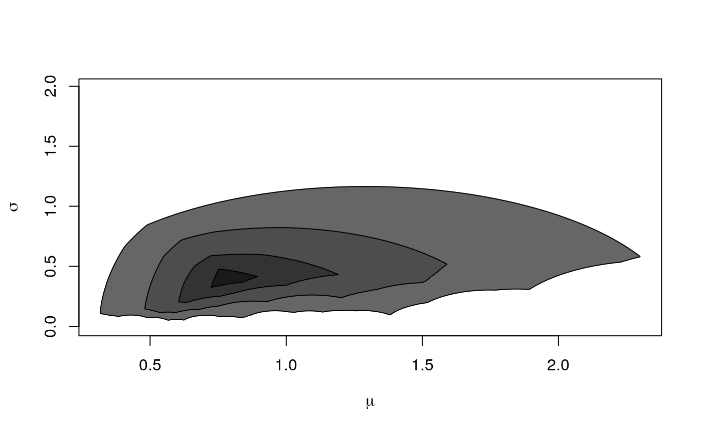

R/locationScaleDepth.R
plot-LSDepthContour-ANY-method.RdCreate location-scale depth plot. See lsdSampleDepthContours for more information.
# S4 method for LSDepthContour,ANY plot( x, cont = NULL, ratio = 1, mu_min = NULL, mu_max = NULL, col = NULL, border = NULL, ... )
| x | object of class LSDepthContour |
|---|---|
| cont | plotted contours. Default NULL means that all contours stored in x will be plotted. |
| ratio | ratio |
| mu_min | mu_min |
| mu_max | mu_max |
| col | vectors with area colors passed to polygon function |
| border | vector with colors for borders |
| ... | other parameters passed to polygon |
smp <- rf(100, 5, 10) x <- lsdSampleDepthContours(smp) plot(x, col = paste0("grey", col = rev(seq(10, 40, 10))))